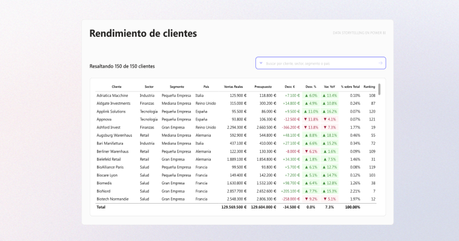
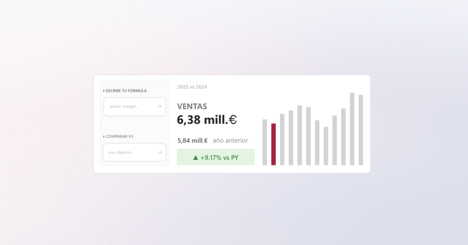
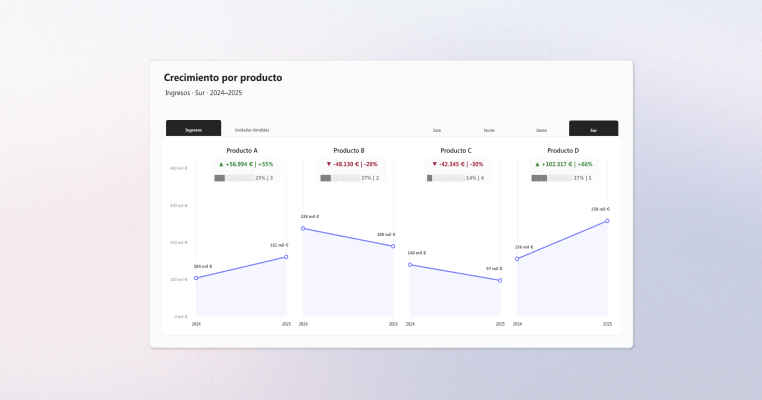
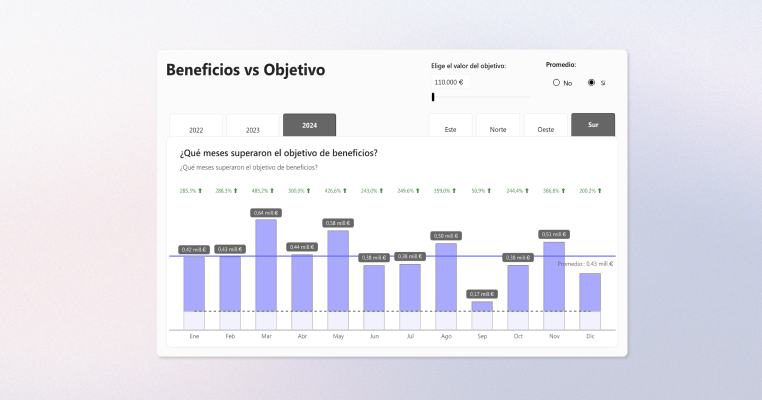
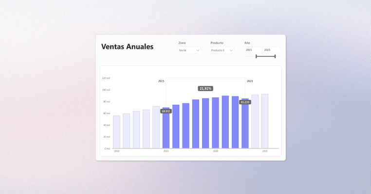

No estás filtrando datos. Estás eligiendo qué historia quieres ver.
Input Slicer, Field Parameters y DAX para análisis dinámicos en una sola tabla.
Ver post
El futuro de los dashboards no son más gráficos, son mejores interacciones.
Input Slicer, Top N y títulos dinámicos para que el usuario explore sin perderse.
Ver post
Producto a producto: cómo los datos cuentan historias.
Análisis anual con zoom trimestral que explica quién gana y cuándo.
Ver post
Si tienes que reconstruir la historia en tu cabeza, el dashboard falla.
Slope charts y small multiples para concentrar toda la información por producto.
Ver post
Un gráfico puede ser correcto y aun así engañar.
Cómo los outliers distorsionan la escala y cómo construir un zoom visual.
Ver post
Variaciones entre columnas al alcance de un vistazo.
Enfoque nativo para hacer comparables las variaciones porcentuales entre periodos.
Ver post